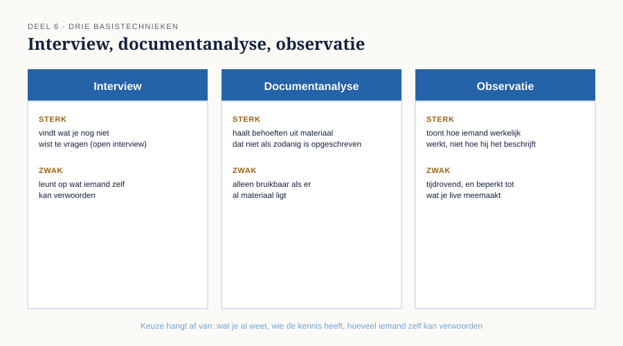
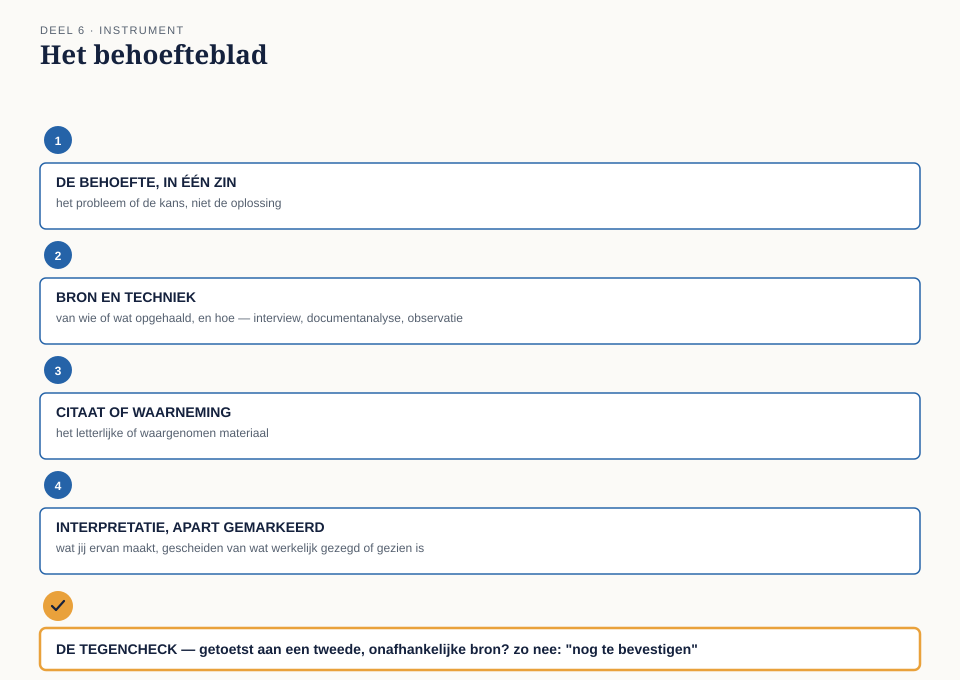

Deel 6 — Behoefte: eliciteren, vastleggen, valideren
Slidedeck · Ductus-cursus Business-analyse · niveau 1 · deel 6 van 30 · 25 slides
Slide 1 — Titel
Business-analyse — deel 6 Behoefte: eliciteren, vastleggen, valideren
Slide 2 — Terugblik
De impactkaart liet zien: er was al veel bekend bij Meridiaan.
Niemand kwam het ophalen.
Vandaag: hoe je dat wél doet.
Slide 3 — Op bezoek bij Gerard
“Ik doe de mutaties altijd rond een uur of negen, na het eten. Laatst moest ik een correctie doorgeven over vorig jaar, en toen kon het niet. Toen heb ik maar gemaild.”
“Hoe vaak gebeurt dat?”
“Weet ik niet precies. Een paar keer per jaar misschien?”
Slide 4 — Waar we het over gaan hebben
- Drie basistechnieken van elicitatie
- Vastleggen zonder te vervormen
- Valideren: is het ook waar?
- Het behoefteblad
Slide 5 — Het interview
Gestructureerd — vaste vragenlijst, goed vergelijkbaar. Open — laat het gesprek zich ontvouwen.
“'s Avonds, na het eten” kwam niet uit een vragenlijst.
Slide 6 — Documentanalyse
Bestaand materiaal bestuderen om behoeften af te leiden die niet als zodanig zijn opgeschreven.
Een e-mail is geen requirementsdocument — en bevat er soms toch een.
Slide 7 — Observatie
Meekijken hoe iemand werkt, in plaats van vragen hoe.
Mensen beschrijven hun werk anders dan ze het uitvoeren — niet uit onwil, uit gewoonte.
Slide 8 —

Drie technieken naast elkaar — sterke en zwakke kant
Slide 9 — Wanneer welke techniek
Interview → ervaring, motivatie, mening Documentanalyse → er ligt al materiaal Observatie → vermoeden dat zeggen en doen verschillen
Slide 10 — Vastleggen: twee gewoontes
Scheid observatie van interpretatie. Citeer waar het ertoe doet.
Slide 11 — Observatie versus interpretatie
“Gerard doet zijn mutaties 's avonds” — observatie. “Gerard heeft geen tijd overdag” — interpretatie.
Misschien waar. Misschien niet. Apart vastleggen.
Slide 12 — Waarom citeren
“Een paar keer per jaar misschien? Ik hou dat niet bij.”
Waardevoller dan “komt incidenteel voor” — dat verbergt dat de bron zelf onzeker is.
Slide 13 — [Opdracht 2]
Observatie of interpretatie? Ontleed het gesprek met Yasmin Oduya.
Slide 14 — Valideren
Wat iemand zegt, is niet automatisch wat werkelijk het geval is.
Valideren: toetsen aan een tweede, onafhankelijke bron.
Slide 15 — Drie manieren om te valideren
Terugkoppelen aan de bron Toetsen aan een tweede bron Toetsen aan gedrag of gegevens
Slide 16 — Gerard en de cijfers
Gerard: “een paar keer per jaar.” Cijfers uit deel 5: 22% van alle mutaties zijn correcties.
Komt overeen in richting — geen zekerheid, wel aannemelijker.
Slide 17 — Geen formaliteit
Eén bron geeft altijd maar één perspectief.
Bij WGP 2.0 werd niets gevalideerd — simpelweg omdat er nauwelijks iets werd geëliciteerd.
Slide 18 — De werkvorm van dit deel
Het behoefteblad
Van bron tot en met validatie.
Slide 19 — Het blad
De behoefte, in één zin Bron en techniek Citaat of waarneming Interpretatie, apart gemarkeerd Omvang, voor zover bekend
Slide 20 — Het veld dat het verschil maakt
De tegencheck
Getoetst aan een tweede bron? Welke, en kwam het overeen? Zo niet: “nog te bevestigen” — een volwaardig antwoord.
Slide 21 —

Het behoefteblad — met de tegencheck als laatste, verplichte stap
Slide 22 — [Opdracht 3]
Vul het behoefteblad in voor Yasmins behoefte. Geen bron verzinnen als je er geen hebt.
Slide 23 — Het examen
Domein 5 — behoefte — 10% Juiste techniek kiezen · observatie van interpretatie onderscheiden · vervolgstap bij een niet-gevalideerde behoefte
Slide 24 — Geen bevinding vandaag
Dit deel bouwt het gereedschap.
Eén gesprek met Gerard is geen antwoord voor alle kleine werkgevers.
Slide 25 — Volgende keer
Wie spreek je eigenlijk, en is dat representatief voor wie geraakt wordt?
Deel 7: belanghebbende. Sluit bevinding B6.